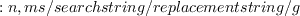

Next: About this document ...
Up: A Gentle Introduction to
Previous: A Gentle Introduction to
Exercises
- Make a copy of the greetings.c program called editit.c using the cp command. Then type the command "vi editit.c" This file will only be used for these
exercises so don't worry if something goes wrong, and feel free to try anything
you wish.
- Basic cursor movement
- In command mode there are several ways of moving the cursor. Try typing one at a time h,j,k,l and find out what these commands do. You may also use the arrow keys to move the cursor.
- The commands above move the cursor one character at a time. Try the commands $ and 0.
- You can move to any line of the file using the G command. The form of the G command is #G where # is the line number. Try going to line 10 of the file. What happens when you leave out the number and just type G? How do you go to the beginning of the file?
- Insert and Replace - insert mode
- There are two basic commands to enter text. The i command begins
adding text before the cursor, and a add text after the cursor. Be careful
until you get used to switching modes. Once you enter i or a you are in
insert mode, and you must hit
escape to exit to command mode. Move the cursor to the G in the word greetings
on line 28 of your file. Insert the word Joyous before Greetings by using the i command. Now hit the Escape key. Move the cursor to the semicolon at the end of the line and add the comment "/* new message */" at the end of the line by
using the "a" command. After using any commands that enter insert mode remember to return to command mode by hitting the escape key when you are finished.
- You can use I and A to insert at the beginning of the line and the
end of the line respectively. Add a nonsense comment to the end of some line by
moving to the line in command mode and use the A command. (You can delete
this comment later in these exercises.)
- As we noted above Linux is case sensitive. Vi has a nice feature for
changing case. Move the cursor to the G in Greetings again and change the case by entering
~ in command mode.
- There are several replace commands in vi. r replaces a single character. Try changing some character using this command. R replaces multiple characters of text until the escape key is hit. Try changing "Joyous greetings" to "happy news on line 28 using the R command.
- You can also replace words using the cw command. Position the cursor on the h in happy (You did remember to go to command mode didn't you?). Type cw and change the word to "very excited".
- Deletion - command mode
- Vi can delete characters, words, lines, or multiple lines if you know the right commands and if you are in command mode. Before we introduce the
deletion commands, you should know about the u command. u is the undo command. Depending on which version of vi you are using you can undo one, or multiple commands. In vim, you can undo multiple commands. Try entering a few letters, and
then return to command mode and type u.
- We won't give specific instructions for this part, but try the following commands:
- x - deletes the character under the cursor.
- dw - deletes from the cursor to the end of the current word.
- D - deletes from the cursor position to the end of the line.
- dd - deletes the current line.
- #dd - deletes # lines beginning with the one under the cursor.
- Many of the powerful commands of vi are entered beginning with a ":". In fact, some books on vi (Yes there are whole books devoted to the subject)
consider this another mode. When you enter a colon you go to the bottom of the screen to enter the rest of your command. These commands often involve a range
of line numbers. The range is entered as "n,m", where n and m are line numbers.
Try entering ":" followed by 3,10d.
- Copying and, search and replace - command mode
- Vi copies by use of a buffer. If you want to copy some lines from
command mode you type #yy and # lines are "yanked" into the buffer. These
lines can be place somewhere else in the file by moving the cursor where you want the lines and typing p. p is the put command it not only works after yy, but after any of the deletion commands, so one way of moving things is to delete
them and then move the cursor and type p. There are other ways to copy and
paste in vi as well. If you are interested check out the :t and :m commands.
- Search and replace are very powerful in vi,
because they can use rational expressions. The use of rational expressions is
beyond the scope of this manual, and so we will stick to some simple uses.
You can search forward in a file by typing searchstring. You
can search backward in a file by typing ?searchstring.
- To replace in vi we use the ":s" command. The full syntax of the
command is:
or

This command needs some explanation. Not all of the the fields in the command are mandatory. In the first version the n,m refers to doing the replacement from lines
n to m, and if left out the replacement will only be for the current line. In the second version the % means replace across the whole file. The g in both cases is not manditory, and means replace all occurrences in each line. If the g is
left off only the fist occurrence on any line will be replaced. Try replacing some words across multiple lines and for the whole file.
Next: About this document ...
Up: A Gentle Introduction to
Previous: A Gentle Introduction to
root
2015-12-02